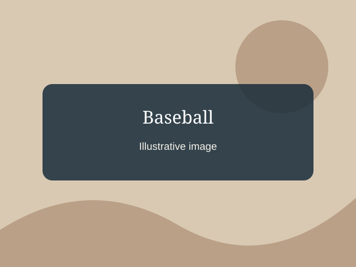

Baseball
He played shortstop and pitcher in high school. An elbow injury changed his plans to pursue baseball further.
Read the storyBaseball, violin, and piano were important parts of Wallen’s early life. These are childhood interests, not necessarily activities he pursues as hobbies today.

He played shortstop and pitcher in high school. An elbow injury changed his plans to pursue baseball further.
Read the story
Learning violin was part of his early musical background and helped introduce him to playing instruments.
Read the storyPiano was another early musical interest, years before music became his full-time career.
Read the storyHis foundation connects these interests to opportunities for young people.
Explore the Morgan Wallen Foundation